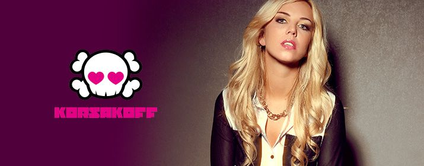

Mainstage: 22:00-23:00!
Das Projekt Korsakoff wurde 2001 von Bart Cook, alias Catscan eingeleitet, um
melodischer und mainstream-orientierter zu produzieren. Seit 2004 ist Lindsay van
der Eng das Gesicht von DJ Korsakoff. Offiziell produziert sie heute selbst, jedoch
munkelt man nach wie vor vom Einfluss von Bart Cook. Ihr Musikstil lässt sich als
Powerrave beschreiben.
Korsakoff gab ihr Debüt 2004 beim Masters of Hardcore vor 15.000 Besuchern. Im
selben Jahr feierte sie mit Stardomeinen großen Erfolg. 2005 war DJ Korsakoff der
höchste Neueinstieg in den holländischen DJ Release Top 100.
2006 erschien ihr Album The Sound Ofmit My Empty Bottle, Powerrave, No
Noctophobiaund Still Wasted. Ebenfalls im Jahr 2006 posierte Lindsay für die
niederländische Ausgabe des Männermagazins FHM.
2007 veröffentlichte sie ihr Album Face To Face, welches in Zusammenarbeit mit DJ
Outblast entstand.
2010 mischte DJ Korsakoff zusammen mit DJ Outblast die zweite CD der Compilation
Hardbass Chapter.